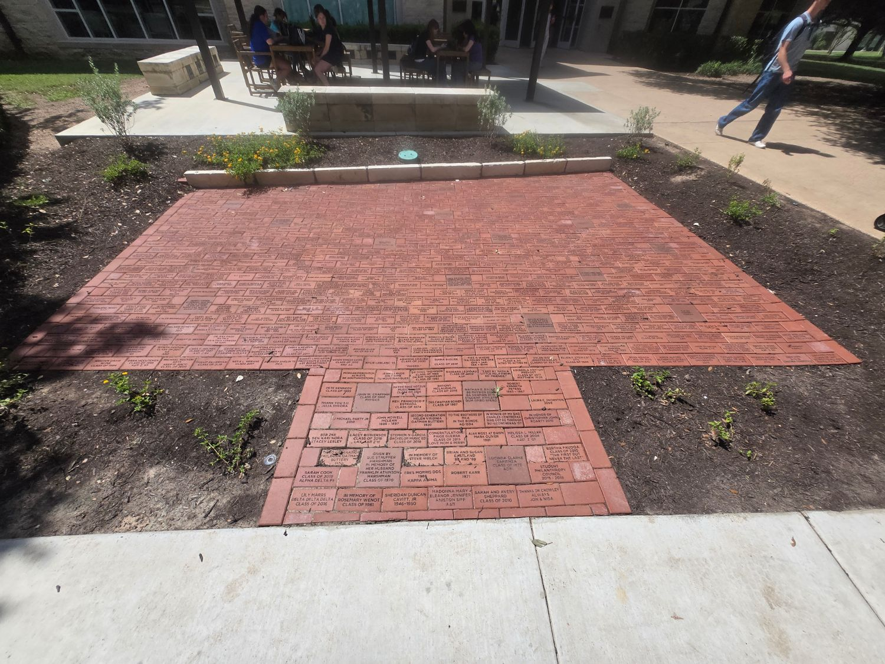
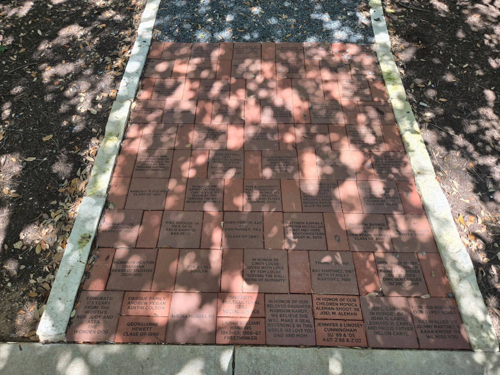
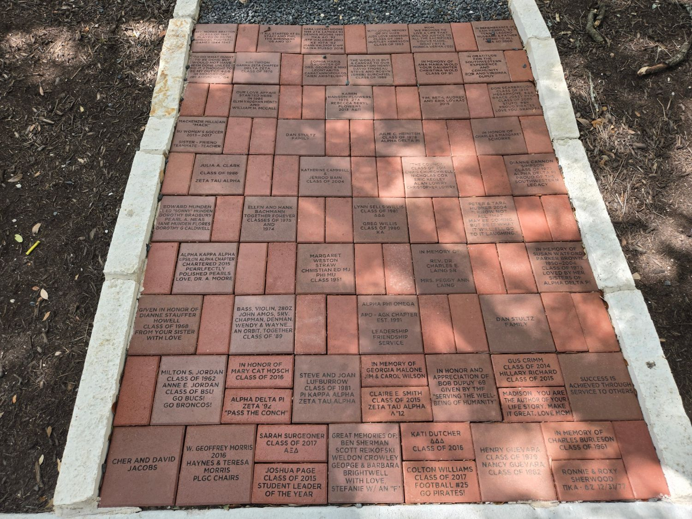

About the Monument
The Donor Brick Monument is a lasting tribute to the alumni, families, and friends whose generosity has shaped Southwestern University. Each engraved brick marks a personal connection to campus — a graduating class, a fraternity or sorority, a memory, or a name given in someone's honor.
The monument spans three sections along the walkway, together holding hundreds of individually inscribed bricks. This site lets you search the collection, browse each section's layout, and find exactly where a particular brick sits.
Gallery



Find the Sections
The map below shows where each section of the monument is located on campus.